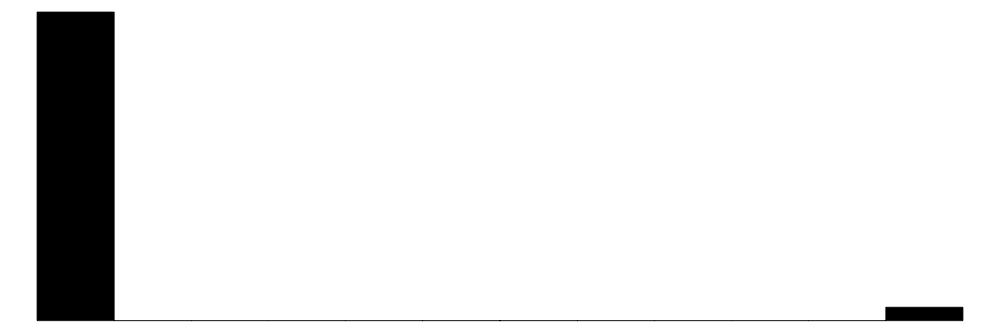
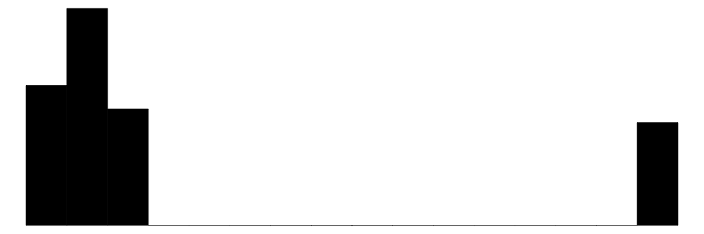
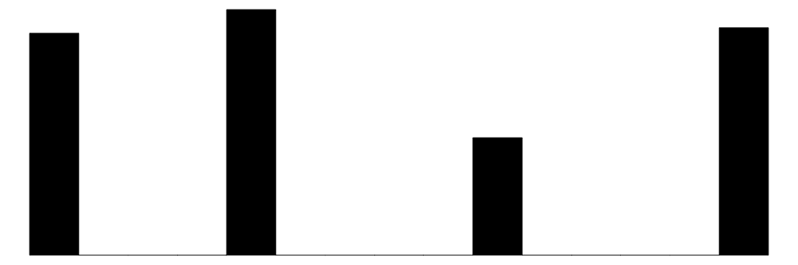
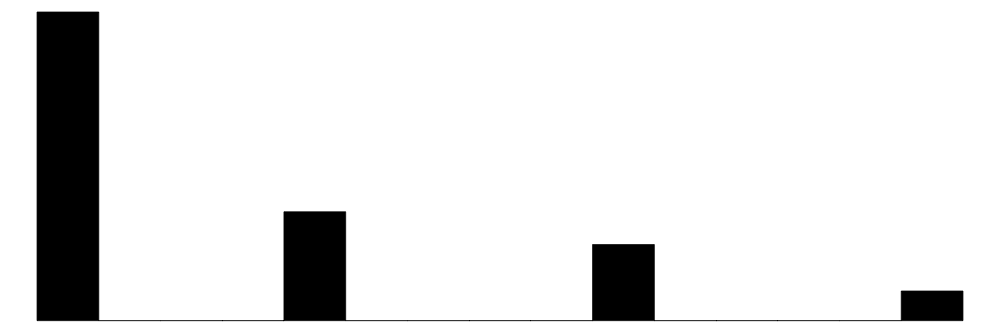
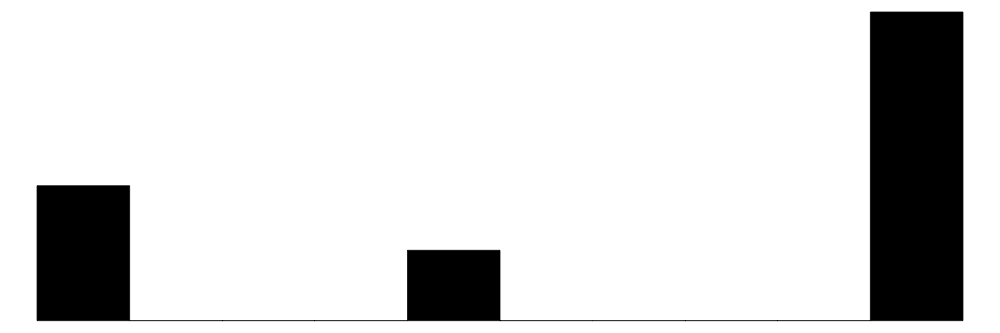

library(here)
library(tidyverse)
library(marginaleffects)
library(modelsummary)
library(tinytable)
library(MASS)Simple Ordinal Logit DiD
1. Load some needed packages:
2. Load data
data <- read_csv(here("data-clean",
"BHET_master_data_04Oct2024.csv"),
col_select = c(ptc_id, hh_id, ID_VILLAGE, ID_COUNTY,
wave, ban_status_composite, smoking))
datasummary_skim(data)| Unique | Missing Pct. | Mean | SD | Min | Median | Max | Histogram | |
|---|---|---|---|---|---|---|---|---|
| ID_VILLAGE | 50 | 0 | 16774.3 | 21777.9 | 10883.0 | 12110.0 | 121072.0 |  |
| ID_COUNTY | 4 | 0 | 26891.0 | 5382.4 | 23494.0 | 24576.0 | 38376.0 |  |
| wave | 4 | 0 | 2.4 | 1.2 | 1.0 | 2.0 | 4.0 |  |
| ban_status_composite | 4 | 0 | 0.7 | 0.9 | 0.0 | 0.0 | 3.0 |  |
| smoking | 4 | 15 | 2.3 | 0.9 | 1.0 | 3.0 | 3.0 |  |
3. Create variables
data <- data %>%
mutate(
smk_cat = factor(smoking, levels = c(1,2,3),
labels = c("Current", "Former", "Never")),
year = if_else(wave==1, 2018,
if_else(wave==2, 2019,
if_else(wave==3, 2020,
if_else(wave==4, 2021, 0)))),
cohort_year = if_else(
ban_status_composite==1, 2019,
if_else(ban_status_composite==2, 2020,
if_else(ban_status_composite==3, 2021, 2022))),
treat = ifelse(year >= cohort_year, 1, 0),
# relabel last cohort year
cohort_year = ifelse(cohort_year == 2022,-Inf,
cohort_year),
# add dummies
year_2019 = if_else(
year==2019, 1, 0),
year_2020 = if_else(
year==2020, 1, 0),
year_2021 = if_else(
year==2021, 1, 0),
cohort_year_2019 = if_else(
cohort_year==2019, 1, 0),
cohort_year_2020 = if_else(
cohort_year==2020, 1, 0),
cohort_year_2021 = if_else(
cohort_year==2021, 1, 0)) %>%
# add village identifier
group_by(ID_VILLAGE) %>%
mutate(v_id = cur_group_id()) %>%
ungroup()4. Model
Run the ordered logit model with the categorical smoking outcome (note that this does not account for clustered standard errors, which has to be done later using marginaleffects):
ol_model <- polr(smk_cat ~
treat:cohort_year_2019:year_2019 +
treat:cohort_year_2019:year_2021 +
treat:cohort_year_2020:year_2021 +
treat:cohort_year_2021:year_2021 +
cohort_year_2019 + cohort_year_2020 +
cohort_year_2021 + year_2019 + year_2021,
data = data, Hess = TRUE)
modelsummary(ol_model)| (1) | |
|---|---|
| Current|Former | -1.070 |
| (0.079) | |
| Former|Never | -0.443 |
| (0.077) | |
| cohort_year_2019 | -0.048 |
| (0.159) | |
| cohort_year_2020 | -0.040 |
| (0.126) | |
| cohort_year_2021 | 0.251 |
| (0.199) | |
| year_2019 | -0.040 |
| (0.098) | |
| year_2021 | 0.007 |
| (0.111) | |
| treat × cohort_year_2019 × year_2019 | -0.062 |
| (0.214) | |
| treat × cohort_year_2019 × year_2021 | -0.225 |
| (0.223) | |
| treat × year_2021 × cohort_year_2020 | -0.109 |
| (0.223) | |
| treat × year_2021 × cohort_year_2021 | 0.215 |
| (0.355) | |
| Num.Obs. | 3112 |
| AIC | 5797.3 |
| BIC | 5863.8 |
| RMSE | 2.19 |
4. Summarize
Get the marginal predictions and contrasts and make a table of the effects for each category:
ol_predictions <- avg_predictions(
ol_model,
newdata = subset(data, treat==1),
variables = "treat", by = "treat",
vcov = ~ v_id)
ol_effects <- slopes(
ol_model,
newdata = subset(data, treat==1),
variables = "treat", by = "treat",
vcov = ~ v_id)
# grab estimates and SEs from marginal predictions
ologit_tab1 <- ol_predictions %>%
mutate(
category = group,
treat = treat,
est = estimate * 100,
se = std.error * 100,
ll = est - 1.96 * se,
ul = est + 1.96 * se,
ci = paste("(", sprintf('%.1f', ll), ", ",
sprintf('%.1f', ul), ")", sep="")) %>%
# keep relevant columns
dplyr::select(category,
treat, est, ci) %>%
# reshape exposure to wide
pivot_wider(names_from = "treat",
values_from = c("est", "ci"),
names_vary = "slowest")
# now for marginal effects
ologit_tab2 <- ol_effects %>%
mutate(
category = group,
est = estimate * 100,
se = std.error * 100,
ll = est - 1.96 * se,
ul = est + 1.96 * se,
ci = paste("(", sprintf('%.1f', ll), ", ",
sprintf('%.1f', ul), ")", sep="")) %>%
# keep relevant columns
dplyr::select(category,
est, ci)
ologit_table <- ologit_tab1 %>%
left_join(ologit_tab2, join_by(category)) %>%
mutate(across(c(est_0, est_1, est), ~ round(.x, 1)))
colnames(ologit_table) <- c("Category", "%", "(95% CI)",
"%", "95% CI", "ATT (%)", "95% CI")
tt(ologit_table,
notes = "Note: Average marginal predictions and ATT from ETWFE ordered logit models without covariates.") %>%
group_tt(
j = list("Treated" = 2:3,
"Untreated" = 4:5,
"Difference" = 6:7))| Treated | Untreated | Difference | ||||
|---|---|---|---|---|---|---|
| Category | % | (95% CI) | % | 95% CI | ATT (%) | 95% CI |
| Note: Average marginal predictions and ATT from ETWFE ordered logit models without covariates. | ||||||
| Current | 26.2 | (22.0, 30.4) | 27.8 | (23.8, 31.7) | 1.6 | (-0.5, 3.7) |
| Former | 13.7 | (11.7, 15.7) | 14.0 | (12.1, 15.9) | 0.3 | (-0.2, 0.8) |
| Never | 60.1 | (54.9, 65.3) | 58.2 | (53.4, 63.0) | -1.9 | (-4.4, 0.7) |